Physical pack: plans for every template not done yet
Rough plans, not art: real images, a footage still where your clip goes, one panel per beat. marks words the buyer edits.
Tick Approve or Maybe and leave notes; they save as you type (or use Copy all notes). Click a panel to see it big.
#04 A or B?
Job: two versions (colours, scents, sizes): get viewers to pick and comment · World: the record shop: two real vinyl records (Side A, Side B), her cobalt/mustard stripes, kraft sleeve · Moves: record as a spinning window, two-tone strip slice between A and B, flip
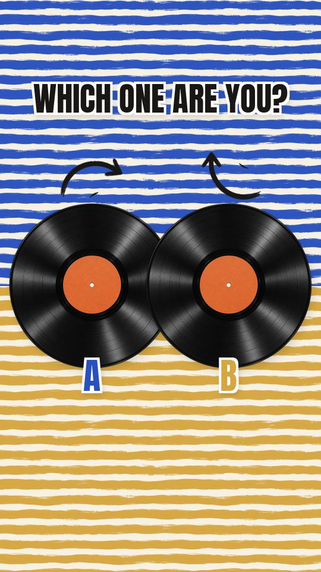
0-2s · Hook: both, side by side
Background: cobalt stripes top, mustard stripes bottom (two materials, one per version)
Footage goes: two round windows: the centre labels of two real records, version A left, B right
Main action: both records spin in from the edges and lock side by side
Doodles: her arrows point from A and from B up to the question
Carried on: the two records
Transition out: A slides up and fills the frame
Text: WHICH ONE ARE YOU? (built-in); A (built-in); B (built-in)
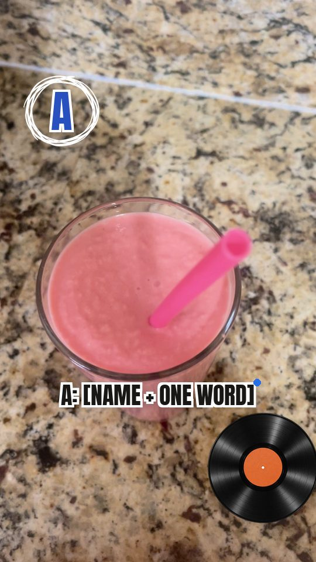
2-5s · Side A
Background: cobalt stripes
Footage goes: version A full frame (the record label opened up)
Main action: the record keeps turning slowly in the corner like a dial
Doodles: her circle round the A sticker
Carried on: the small record in the corner
Transition out: two-tone strip slice (cobalt / mustard) to Side B
Text: A (built-in); A: [NAME + ONE WORD] (editable)
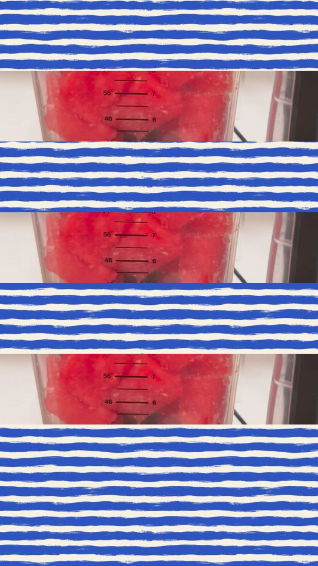
4.8-5.2s · Strip slice
Background: A cut into strips tinted cobalt and mustard
Footage goes: B underneath, showing through the gaps
Main action: the strips slide apart left and right
Carried on: the corner record
Transition out: B is full frame
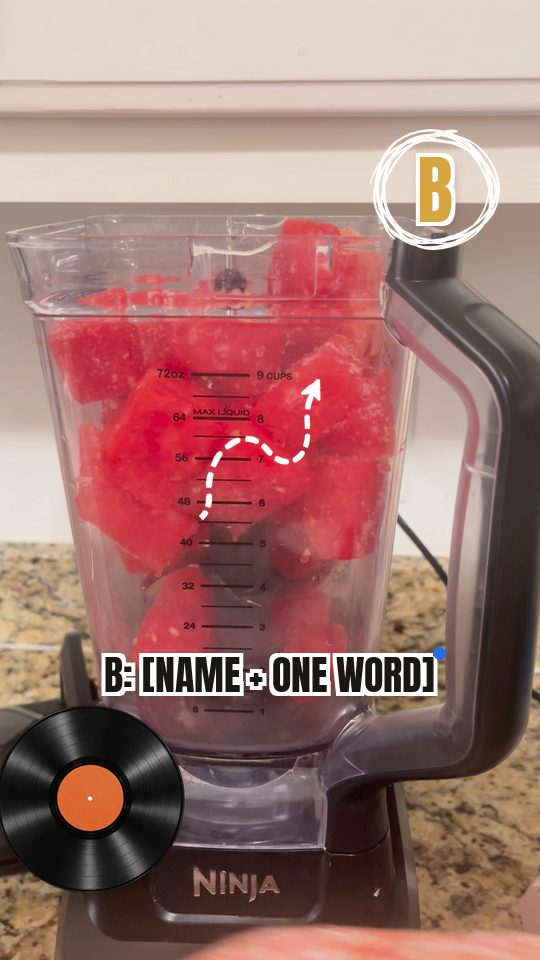
5-8s · Side B
Background: mustard stripes
Footage goes: version B full frame
Main action: the corner record flips over (now Side B)
Doodles: her circle round the B sticker; her dashed arrow at the product
Carried on: the corner record
Transition out: both shrink back into the two records
Text: B (built-in); B: [NAME + ONE WORD] (editable)
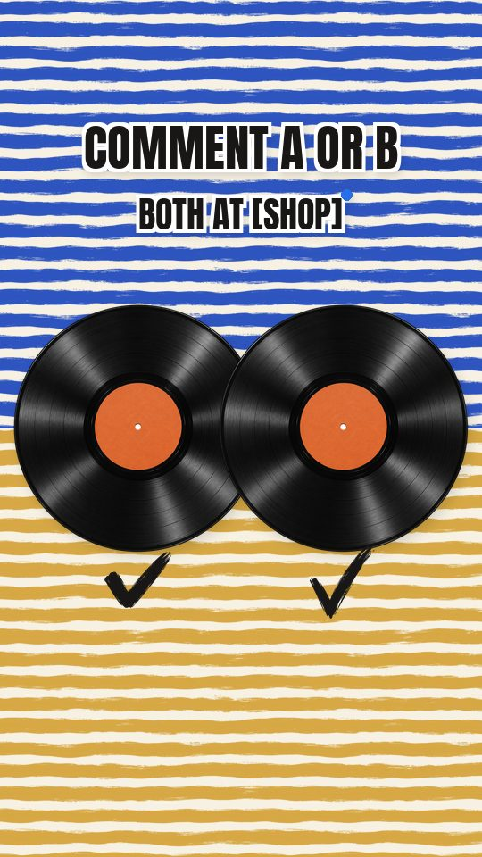
10-12s · CTA: pick one
Background: cobalt over mustard stripes
Footage goes: both records again, A and B playing in the labels; your hand picking one
Main action: the records spin; your pick pops bigger
Doodles: her ticks pop by each record as people vote
Transition out: end
Text: COMMENT A OR B (built-in); BOTH AT [SHOP] (editable)
#05 Details you'd miss in a photo
Job: show the quality only a close look reveals · World: the jeweller's bench: dark walnut, brass loupe, gold wire glasses, tweezers, her cream dots on deep navy · Moves: lens window (loupe), glasses with a detail in each lens, colour inside / greyscale outside
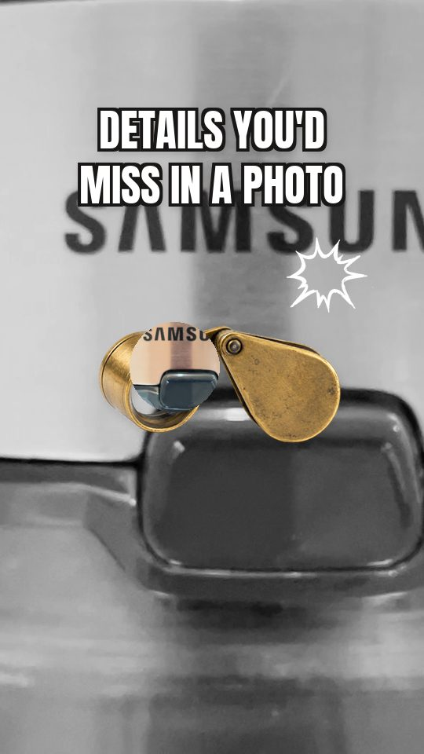
0-2.5s · Hook: the loupe finds detail 1
Background: detail 1 full frame in GREYSCALE
Footage goes: a sharp, colour circle inside the real brass loupe
Main action: the loupe slides in over the product
Doodles: her burst on the loupe as it lands
Carried on: the loupe
Transition out: the loupe glides to the next spot
Text: DETAILS YOU'D (built-in); MISS IN A PHOTO (built-in)
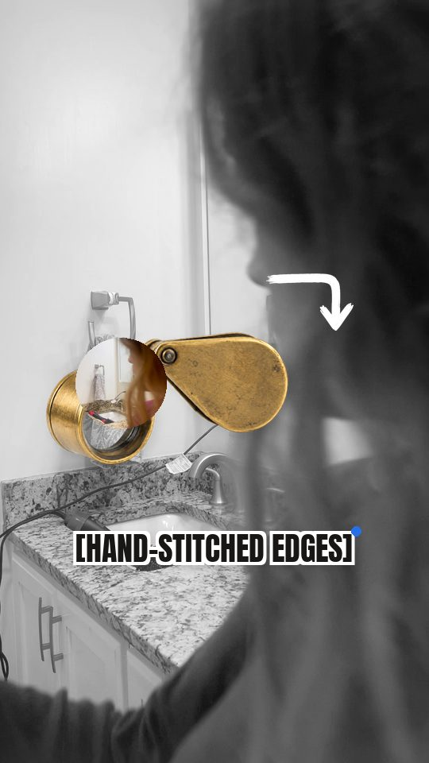
2.5-5s · Detail 2
Background: greyscale outside
Footage goes: colour inside the loupe, now on detail 2
Main action: the loupe glides from detail 1 to detail 2
Doodles: her arrow at the detail
Carried on: the loupe
Transition out: the loupe lens grows to full frame
Text: [HAND-STITCHED EDGES] (editable)
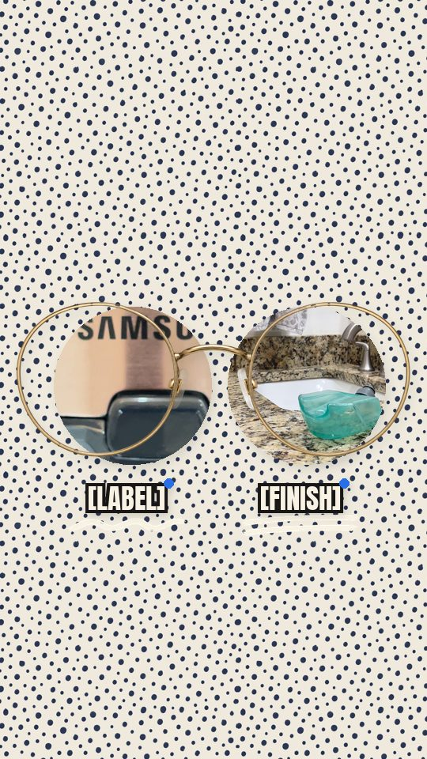
5-8s · Details 3 + 4: the glasses
Background: deep navy with her cream dots
Footage goes: detail 3 and detail 4 in the two lenses of real gold wire glasses
Main action: the glasses settle onto the frame, one lens then the other fills
Doodles: her underlines under each line
Carried on: the glasses
Transition out: the right lens expands to full frame
Text: [LABEL] (editable); [FINISH] (editable)
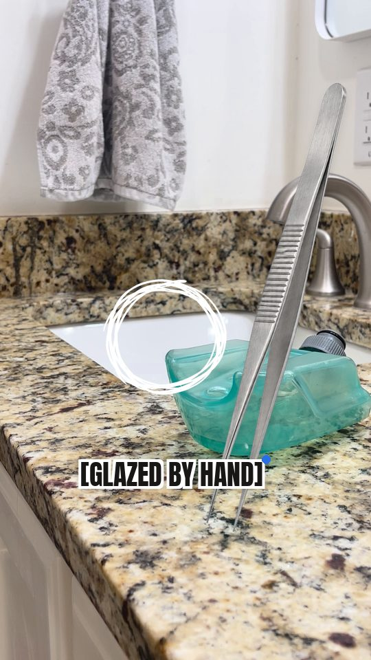
8-10s · Detail 4 close
Footage goes: detail 4 full frame
Main action: tweezers lift in from the side and point at the detail
Doodles: her circle round the spot
Carried on: the tweezers
Transition out: zoom out through the loupe
Text: [GLAZED BY HAND] (editable)
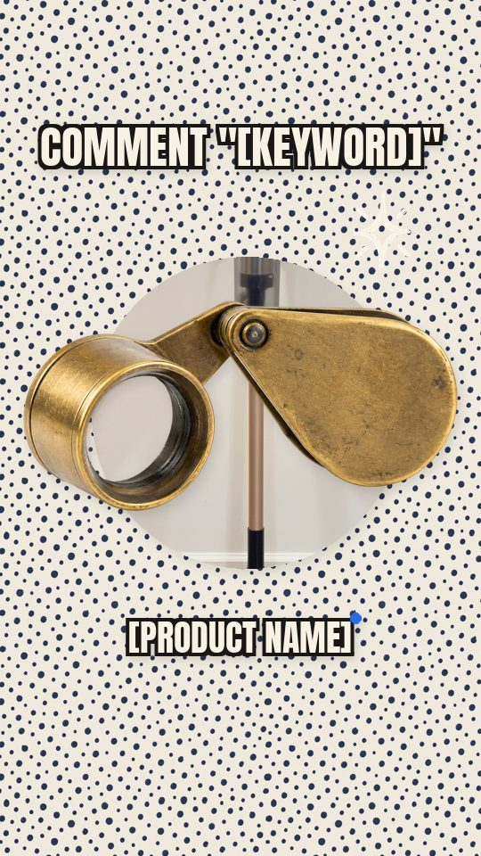
10-12s · CTA: pulled back
Background: navy dots, the walnut bench as a band
Footage goes: the whole product inside the loupe, pulled back
Main action: the loupe lifts away revealing it all
Job: show the making, so the price makes sense · World: the workshop: worn wood bench, kraft paper roll, jute twine, ticket stubs for each step, the rubber stamp · Moves: torn reveal (kraft paper tears to each step), twine timeline carried across, stamp DONE
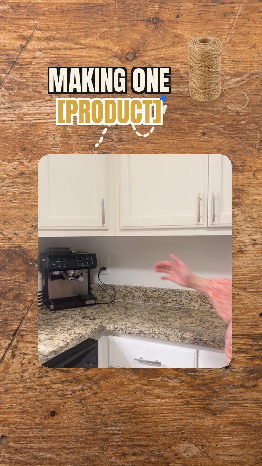
0-2s · Hook: raw materials
Background: worn wood bench
Footage goes: the raw-materials clip in a torn opening in kraft paper
Main action: the kraft paper tears open from the middle
Doodles: her dashed arrow from the words into the tear
Carried on: the twine line across the top
Transition out: the next tear
Text: MAKING ONE (built-in); [PRODUCT] (editable)
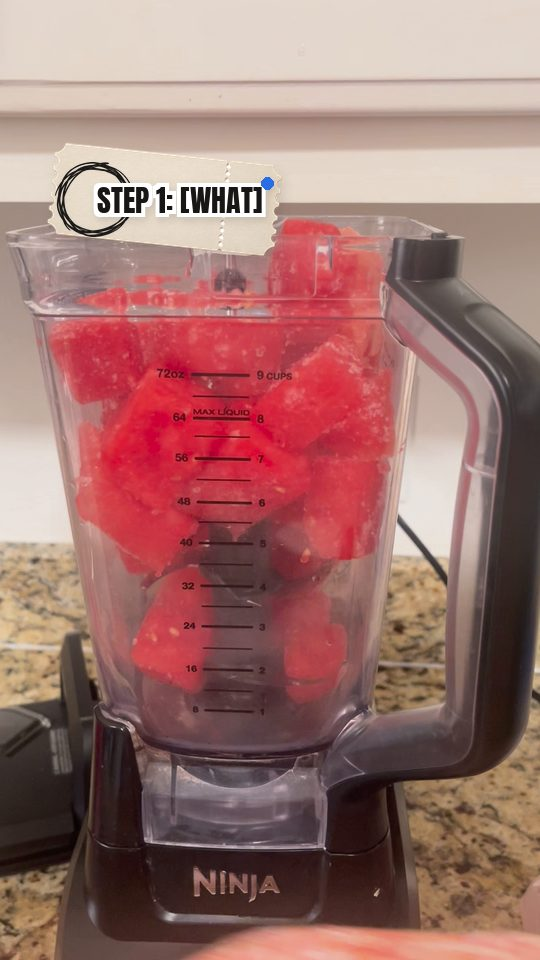
2-5s · Step 1
Footage goes: step 1 full frame
Main action: a ticket stub drops onto the twine line and swings
Doodles: her circle round the step number
Carried on: the twine line + ticket 1
Transition out: kraft paper tears across to step 2
Text: STEP 1: [WHAT] (editable)
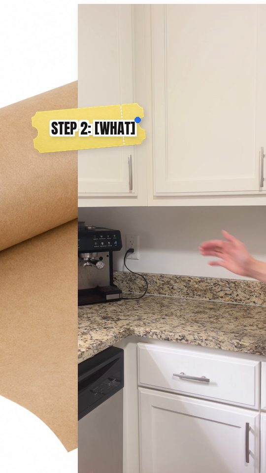
5-8s · Step 2 (the tear)
Background: kraft paper half torn away
Footage goes: step 2 behind the tear
Main action: the tear runs down the frame
Carried on: twine + tickets 1 and 2
Transition out: tear to step 3
Text: STEP 2: [WHAT] (editable)
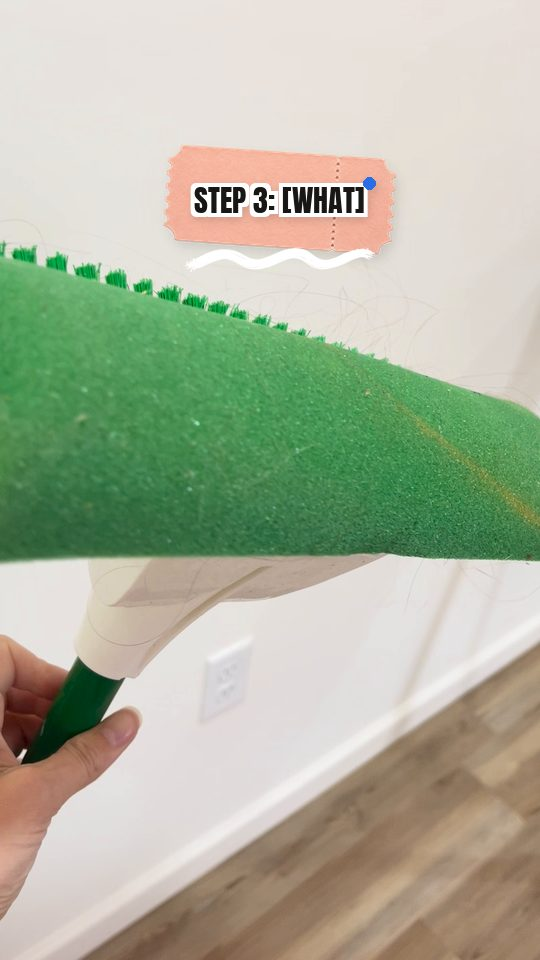
8-11s · Step 3
Footage goes: step 3 full frame (sped up)
Main action: ticket 3 joins the line
Doodles: her underline under the step
Carried on: twine + three tickets
Transition out: the stamp comes down
Text: STEP 3: [WHAT] (editable)
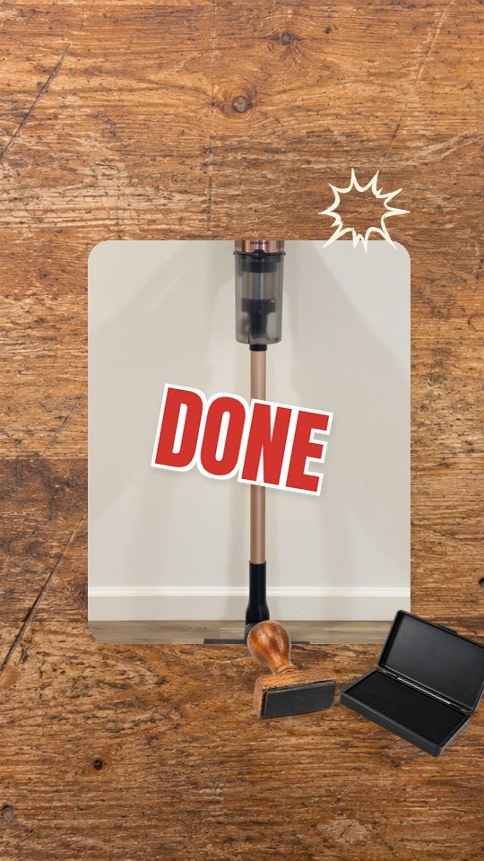
11-13s · Done: the stamp
Background: wood bench
Footage goes: the finished product in a photo card
Main action: the real rubber stamp stamps DONE
Doodles: her burst on DONE
Carried on: the stamp
Transition out: the card grows to the CTA
Text: DONE (built-in)
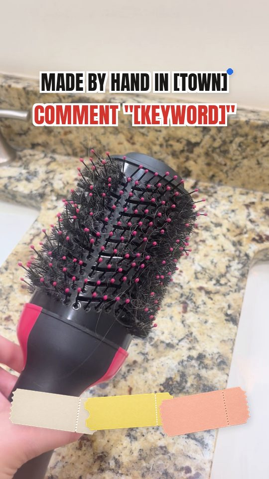
13-15s · CTA
Background: wood + kraft band
Footage goes: the product in use full frame
Main action: the three tickets fan in along the bottom
Transition out: end
Text: MADE BY HAND IN [TOWN] (editable); COMMENT "[KEYWORD]" (built-in)
#07 How big is it really? (fresh take)
Job: answer the size question before people ask · World: the measuring wall: a giant wooden ruler, white pegboard, everyday things for scale (mug, playing card, cassette, phone) · Moves: the ruler as a sliding divider (carries the next clip in), a line-up for scale, surreal scale
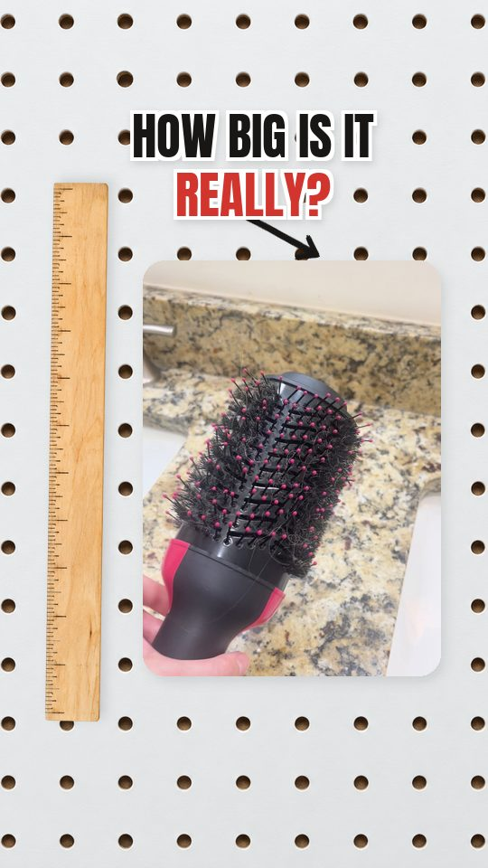
0-2s · Hook: the ruler
Background: white pegboard
Footage goes: the product clip in a tall window beside a giant ruler
Main action: the giant real ruler slides up beside the clip, ticking up
Doodles: her ? beside the hook; her arrow from the ruler to the product
Carried on: the ruler
Transition out: the ruler slides across, carrying clip 2 in behind it
Text: HOW BIG IS IT (built-in); REALLY? (built-in)
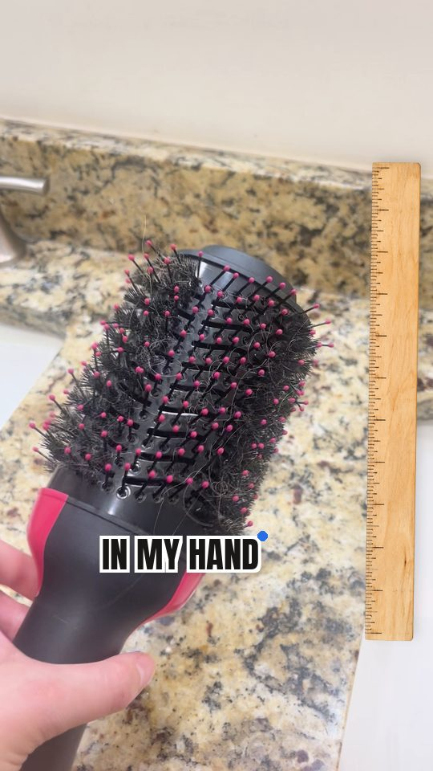
2-4s · In my hand
Footage goes: clip 2 full frame
Main action: the ruler slides across as the divider, clip 2 coming in behind it
Carried on: the ruler (now on the right edge)
Transition out: line-up
Text: IN MY HAND (editable)
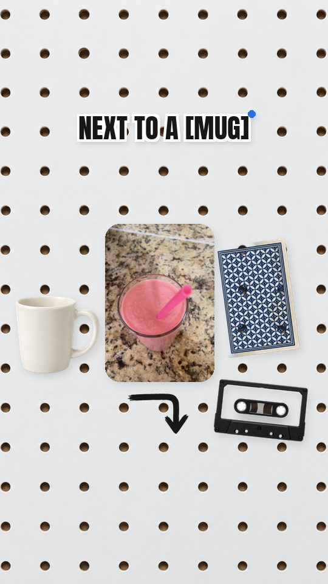
4-6s · Next to things you own
Background: pegboard
Footage goes: clip 3 in a window the size the product really is
Main action: a line-up drops in: a mug, a playing card, a cassette
Doodles: her labels with arrows to each thing
Carried on: the ruler
Transition out: the clip grows
Text: NEXT TO A [MUG] (editable)
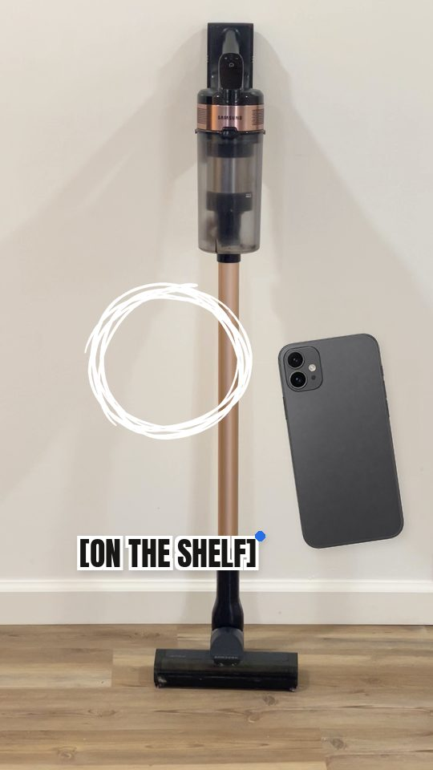
6-8s · Worn / on a shelf
Footage goes: clip 4 full frame
Main action: a real phone slides in at true scale beside it (surreal scale check)
Doodles: her circle round the product
Carried on: the phone
Transition out: the ruler swings down horizontal
Text: [ON THE SHELF] (editable)
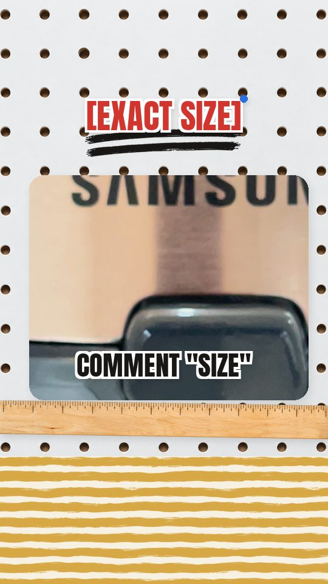
8-10s · CTA: the exact size
Background: pegboard + mustard stripes band
Footage goes: the product on the ruler, full frame clip in a wide window
Main action: the size number pops on a real paint chip
Job: answer the question everyone DMs, once, publicly · World: the switchboard: a dusty-blue rotary phone, kraft padded mailers, a mailbox with the flag up, her speech bubbles · Moves: a speech bubble as the window, the rotary phone ringing, mail floods then clears
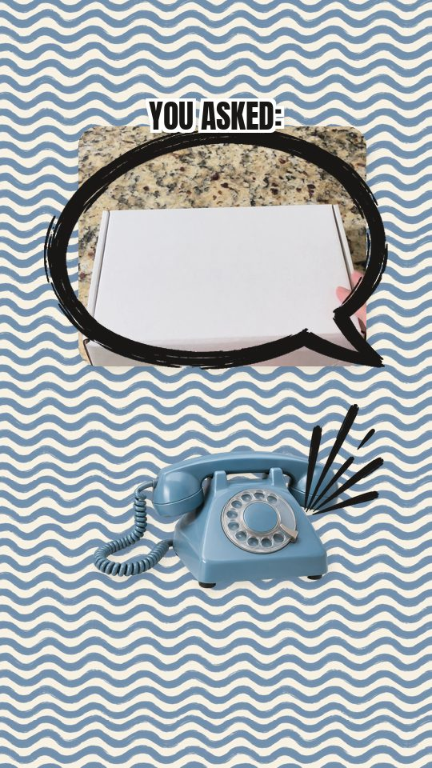
0-3s · Hook: the question rings in
Background: dusty blue + her cream wavy lines
Footage goes: the customer's question (their screenshot) inside her speech bubble
Main action: the real rotary phone rings (shakes), the bubble pops out of the handset
Doodles: her burst lines on the ringing phone
Carried on: the speech bubble
Transition out: the bubble grows into the answer clip
Text: YOU ASKED: (built-in)
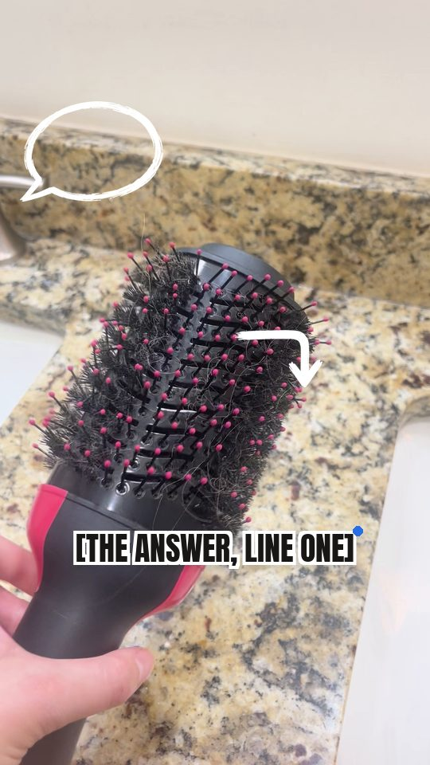
3-7s · Answer, part 1
Footage goes: answer clip 1 full frame
Main action: the bubble shrinks to the corner and stays
Doodles: her arrow at the product
Carried on: the bubble in the corner
Transition out: mail floods across
Text: [THE ANSWER, LINE ONE] (editable)
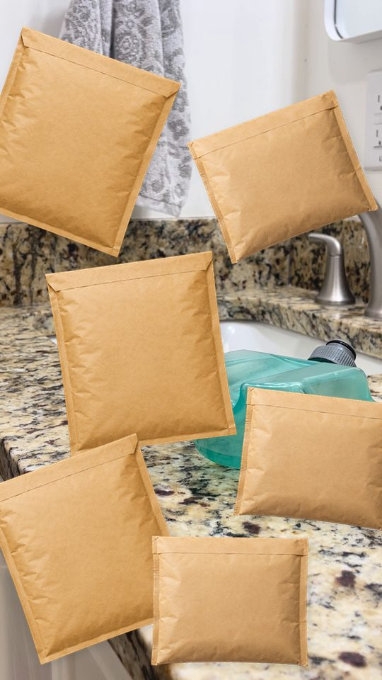
6.8-7.2s · Mail flood
Background: kraft padded mailers pile in from every side
Footage goes: clip 2 under the pile
Main action: the envelopes flood, then fly off
Carried on: one mailer stays in the corner
Transition out: clip 2 full
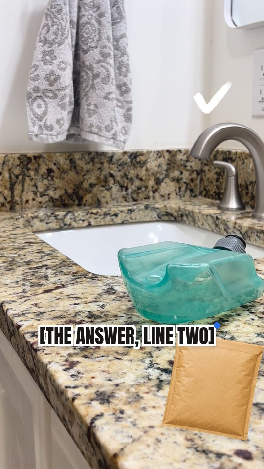
7-11s · Answer, part 2
Footage goes: answer clip 2 full frame
Main action: one mailer sits in the corner (the reply)
Doodles: her underline under the line; her tick
Carried on: the mailer
Transition out: the mailbox flag drops
Text: [THE ANSWER, LINE TWO] (editable)
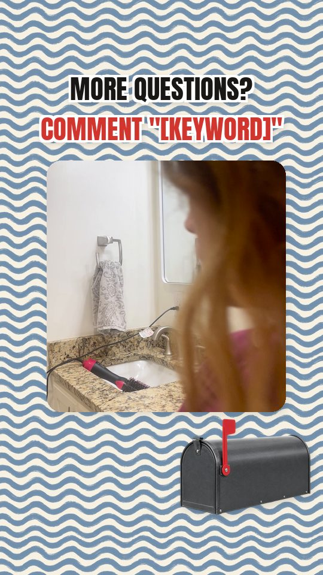
11-15s · CTA: in use
Background: dusty blue wavy lines band
Footage goes: the product in use in a photo card
Main action: the mailbox flag drops (answered)
Transition out: end
Text: MORE QUESTIONS? (built-in); COMMENT "[KEYWORD]" (built-in)
#09 Who it's for
Job: make the right buyer say "that's me" · World: the name-tag party: blank HELLO name-tag stickers (green and red borders), a lanyard badge holder, a cone party hat, a disco ball · Moves: name tags as windows, disco-ball sparkle swarm orbiting, badge swing as the change
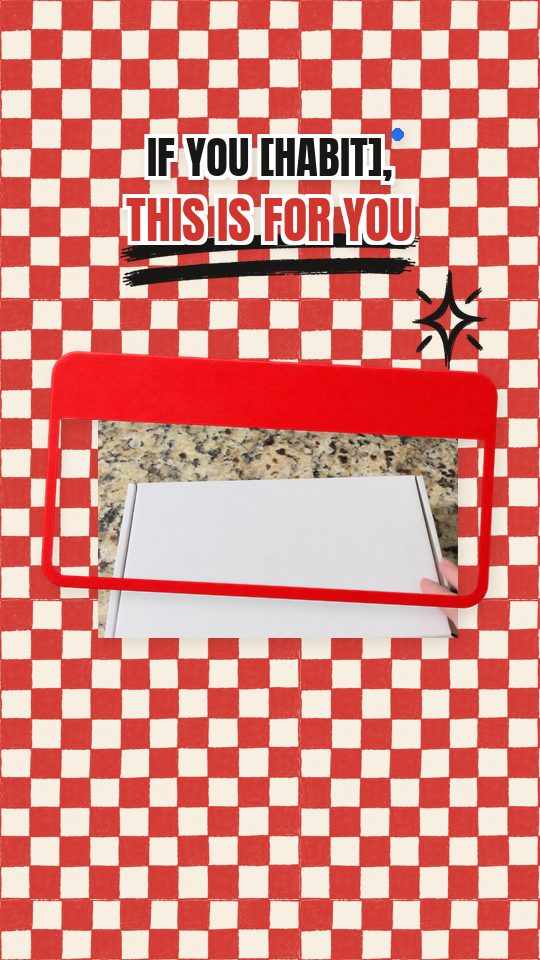
0-2s · Hook: if you...
Background: red gingham-style checks (her checkerboard in red)
Footage goes: the product clip inside a real HELLO name tag
Main action: the name tag slaps onto the frame and wobbles
Doodles: her underline under the habit; her sparkles
Carried on: the tag
Transition out: the tag flips to person one
Text: IF YOU [HABIT], (editable); THIS IS FOR YOU (built-in)
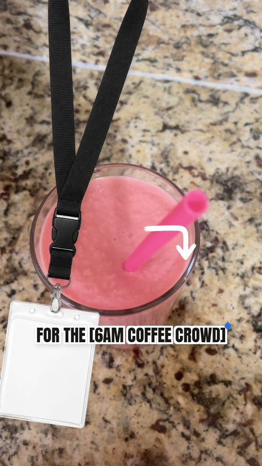
2-5s · Type one
Footage goes: moment one full frame
Main action: the badge holder swings in on its lanyard with the type written on it
Doodles: her arrow at the hands
Carried on: the lanyard
Transition out: the badge swings out, the next swings in
Text: FOR THE [6AM COFFEE CROWD] (editable)
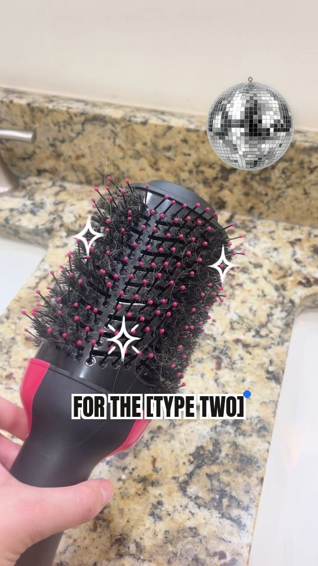
5-8s · Type two: the disco ball
Footage goes: moment two full frame
Main action: a real disco ball drops in on a string; her sparkles orbit the product (swarm)
Doodles: her sparkles circling
Carried on: the disco ball
Transition out: the ball swings across as the wipe
Text: FOR THE [TYPE TWO] (editable)
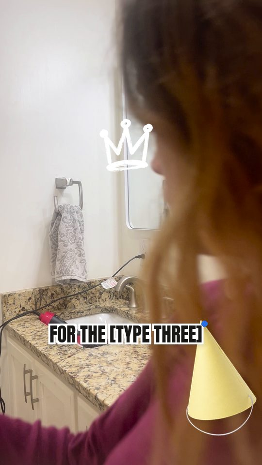
8-10s · Type three
Footage goes: moment three full frame
Main action: the party hat lands on the corner of the frame
Doodles: her crown doodle over the product
Carried on: the hat
Transition out: tags flood to the CTA
Text: FOR THE [TYPE THREE] (editable)
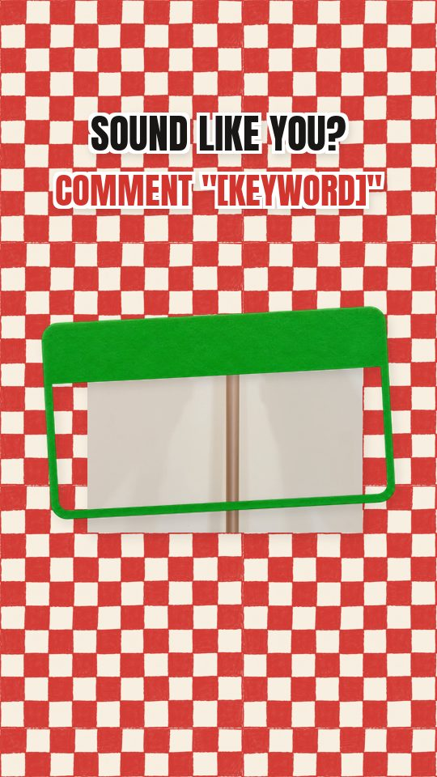
10-12s · CTA: sound like you?
Background: red checks
Footage goes: the product on its own inside the green name tag
Main action: three tags stack up, the last one is yours
Transition out: end
Text: SOUND LIKE YOU? (built-in); COMMENT "[KEYWORD]" (built-in)